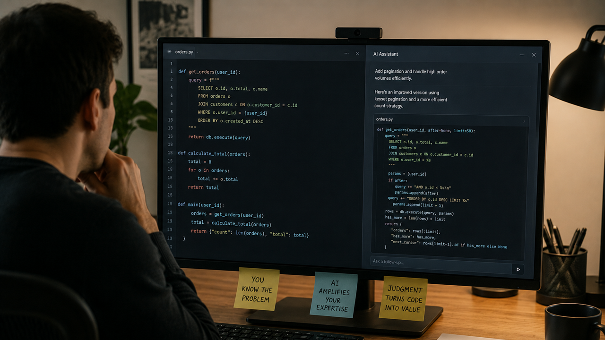

Image captionEngineer leveraging AI coding tools, where human judgment turns suggestions into real value.
Image size: 1600 x 900 article header, 1200 x 630 social cropThe point
Vibe coding is a good phrase because it captures the feeling:1 move fast, describe intent, let the model draft, steer by taste. But the serious version is still software engineering. You need review, architecture, tests, naming, state management and the old boring question: what breaks when this grows?
The risk
Without subject-matter knowledge, AI-assisted programming can create confident fog. It may run. It may demo. It may even look clean. But a beginner often cannot see the hidden coupling, the missing edge case, the security issue, or the architecture that will become a wall later.
With expertise, the same tool becomes something else:2 a sketchpad, a second pair of hands, a way to explore branches faster than you could type them. The machine accelerates execution. The human still has to carry taste.
The Appeal
- Experts can turn hours of boilerplate into minutes of review.
- The best workflow is not blind generation. It is tight human-in-the-loop steering.
- The new craft is knowing what to ask for, what to reject, and what to rewrite.
This is why the phrase can sound silly and still point at something real. A good builder can use AI to sketch, compare, refactor and test ideas faster than before. A weak builder can also create a larger mess faster than before. Both things are true. The tool does not settle the question; the user does.
The appeal is practical. Less ceremony around the first draft. More energy left for the hard part: deciding what the software should be, where the boundaries are, and which shortcut will become expensive later.
Sources
- arXiv: Vibe coding, programming through conversation with artificial intelligence — accessed July 5, 2026.
- arXiv: From Prompting to Verification, how experience shapes vibe coding practices — accessed July 5, 2026.